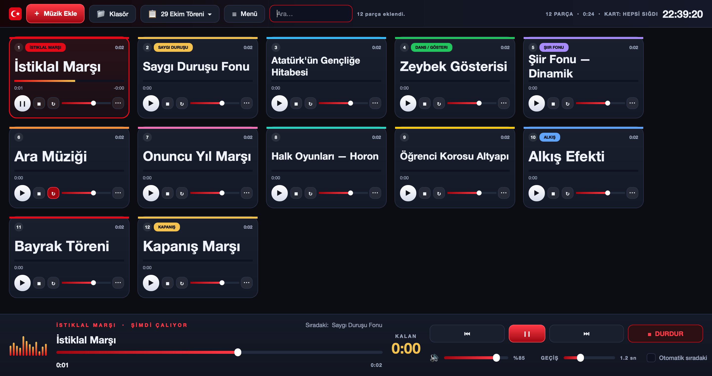
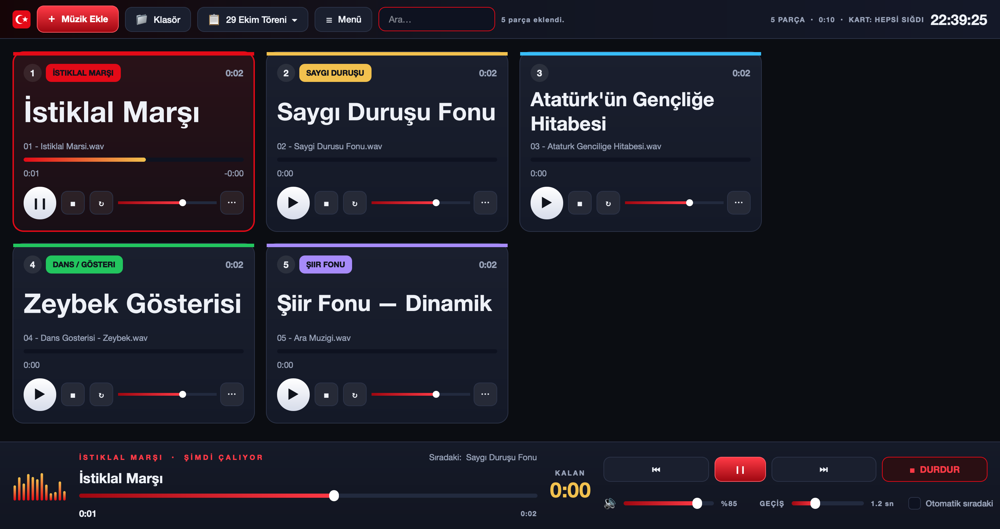

Törende sesler tek ekrandan yönetilsin
Her müzik ekranda bir kart olur. Kartından çalınır, duraklatılır, kaldığı yerden devam eder. Sesler yumuşakça açılıp kapanır; sahnede “pat” diye kesilme olmaz. Birden çok çalma listesi tutabilir, kartların tamamını tek ekrana sığdırabilirsiniz.
Ücretsiz ve açık kaynak · Kurulum gerektirmez · Python gerekmez

Tören için düşünülmüş ayrıntılar
Sahne arkasında tek kişi, tek ekran, tek tıkla.
Kartlardan çalma
Büyük düğmeyle çal, aynı düğmeyle duraklat; parça kaldığı yerden devam eder.
Yumuşak geçiş
Açılma ve kapanma süresi ayarlanır. Marşlarda kapatıp keskin başlatabilirsiniz.
Kalan süre
Alt konsolda büyük puntoyla kalan süre; sunucuya işaret vermek kolay.
Çalma listeleri
Tören, prova, ara müzikleri… Birden çok liste tutun, tek tıkla geçin. Listeler uygulamanın içinde saklanır.
Kendiliğinden sığar
Kartlar ekrana sığacak en büyük boyuta kendiliğinden ayarlanır; isterseniz “ekranda 20 kart” gibi sabitlersiniz.
Sürükle-bırak sıra
Program sırası kartları sürükleyerek değişir; dosyalar pencereye bırakılarak eklenir.
Acil durdurma
Esc sesi yumuşakça kısar, K anında keser.
Etiket ve renk
“İstiklal Marşı”, “Saygı Duruşu” gibi etiketler ve kart renkleriyle hızlı ayırt edin.
Kendiliğinden kayıt
Liste ve ayarlar saklanır; program dosyası olarak yedeklenip taşınabilir.
Nasıl açılır
İndirdiğiniz dosya tek başına çalışır, kurulum yoktur.
Windows
CumhuriyetSesKonsolu.exedosyasını indirin.- Çift tıklayın.
- “Windows kişisel bilgisayarınızı korudu” uyarısı çıkarsa Daha fazla bilgi → Yine de çalıştır.
macOS
CumhuriyetSesKonsolu-mac.dmgdosyasını açın.- Uygulamayı Applications klasörüne sürükleyin.
- İlk açılışta uygulamaya sağ tık → Aç deyin.
Linux
CumhuriyetSesKonsoludosyasını indirin.chmod +x CumhuriyetSesKonsolu./CumhuriyetSesKonsolu
Klavye kısayolları
Tören sırasında en hızlı yol.
| Tuş | İş |
|---|---|
| Boşluk | Duraklat / devam ettir |
| 1 – 9, 0 | O sıradaki kartı çal |
| Esc | Acil: sesi yumuşakça kıs ve durdur |
| K | Anında kes |
| N / P | Sonraki / önceki parça |
| ← → | 5 sn geri / ileri (Shift ile 30 sn) |
| ↑ ↓ | Ana sesi %5 arttır / azalt |
| Ctrl + / − | Kartları büyüt / küçült |
| Ctrl Shift F | Bütün kartları ekrana sığdır |
| Ctrl T | Yeni çalma listesi |
| Ctrl Tab | Sıradaki çalma listesine geç |
| F11 | Tam ekran |
| F1 | Yardım |
Az parça, büyük kartlar
Listede az parça varsa kartlar iyice büyür; adı uzaktan okunur.
